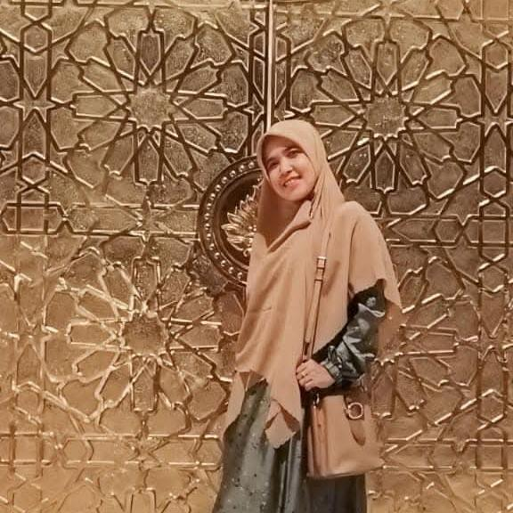
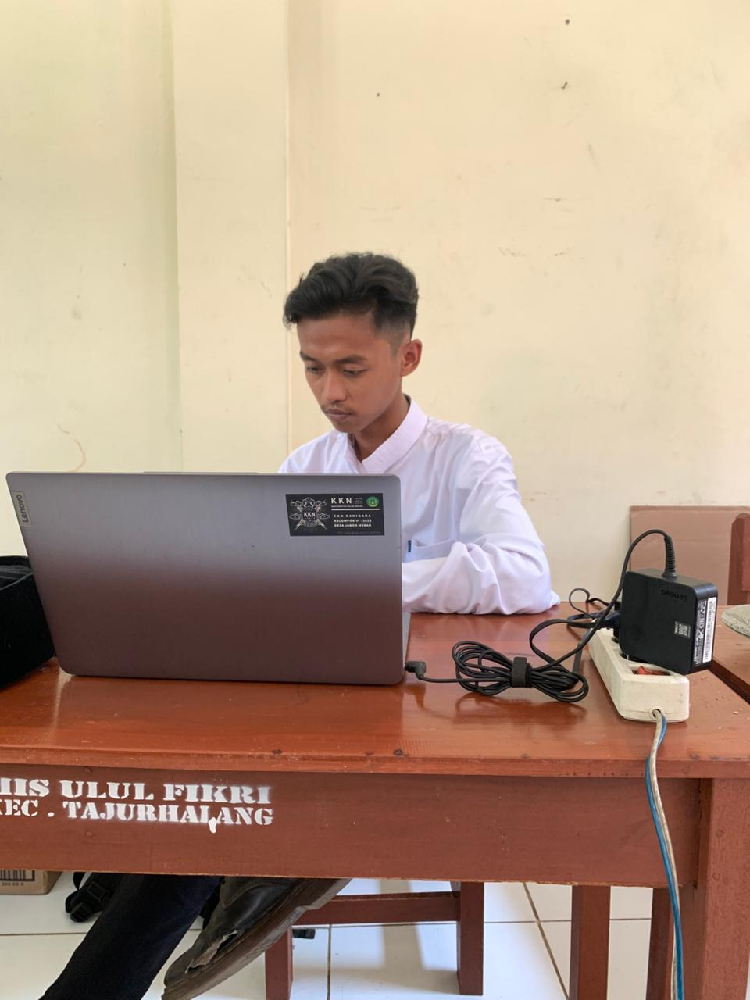
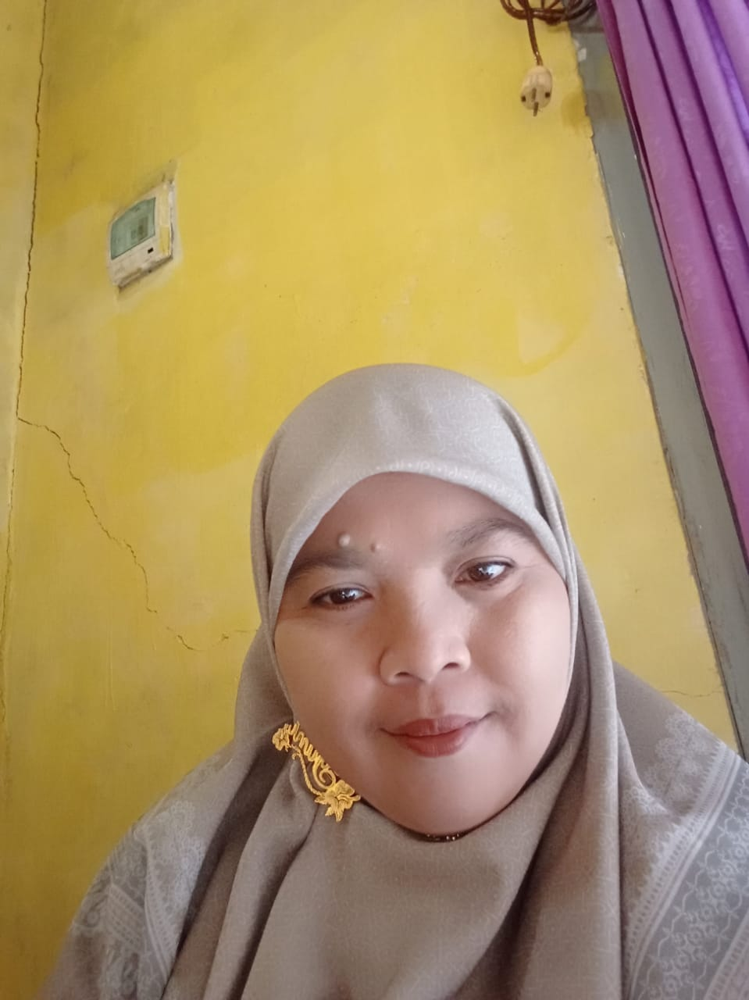
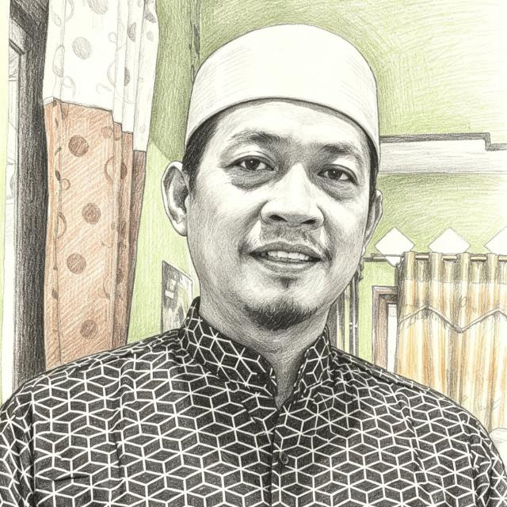
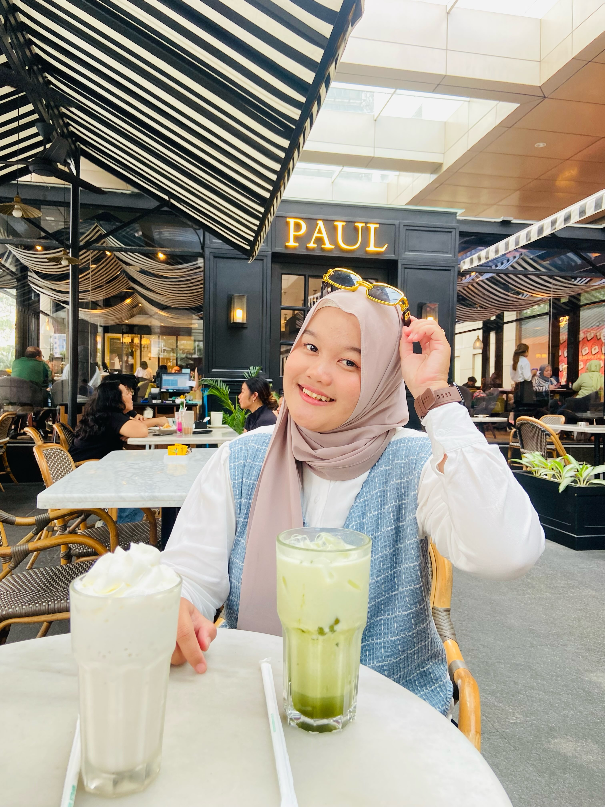

Guru & Tenaga Kependidikan

Nunung Nurudin, S.Th.I
Beliau merupakan seorang pendidik yang memiliki dedikasi
tinggi dalam dunia pendidikan Islam. Menempuh pendidikan di bidang kependidikan dan
keislaman serta memiliki pengalaman mengajar dan memimpin lembaga pendidikan selama
bertahun-tahun. Dengan komitmen yang kuat terhadap peningkatan mutu pendidikan, beliau
terus mendorong terciptanya lingkungan belajar yang religius, disiplin, inovatif, dan
berkarakter.
Di bawah kepemimpinannya, MI Ulul Fikri senantiasa berupaya memberikan layanan
pendidikan terbaik melalui pengembangan kompetensi guru, peningkatan prestasi peserta
didik, serta penguatan nilai-nilai akhlakul karimah sebagai bekal generasi masa depan.

Yupi Desfina, S.S
Wakil Kepala Madrasah Bidang Kurikulum Seorang pendidik yang berdedikasi dalam meningkatkan mutu pendidikan melalui pengelolaan kurikulum yang terarah, inovatif, dan berorientasi pada perkembangan peserta didik. Berkomitmen mendukung terciptanya proses pembelajaran yang efektif, berkualitas, serta selaras dengan nilai-nilai keislaman dan perkembangan pendidikan. Dengan semangat kolaborasi bersama kepala madrasah dan dewan guru, beliau terus berupaya mewujudkan lingkungan belajar yang unggul, berkarakter, dan berprestasi.
Magdalena Trisantuni S.S
Merupakan lulusan Universitas Nasional yang memiliki
dedikasi tinggi dalam dunia pendidikan anak. Berpengalaman mengajar selama 5 tahun di
PAUD Sahabat Pelangi, 3 tahun di Bimbingan Belajar Rainbow, dan 7 tahun sebagai pengajar
di bimbingan belajar mandiri, sehingga memiliki pemahaman yang kuat dalam mendampingi
peserta didik pada berbagai tahap perkembangan belajar.
Sebagai Guru Kelas 1A MI Ulul Fikri, beliau berkomitmen menciptakan suasana belajar yang
menyenangkan, membangun karakter, serta mengembangkan potensi akademik dan sosial
peserta didik secara seimbang. Beliau meyakini bahwa keberhasilan pendidikan tidak hanya
diukur dari kecerdasan intelektual, tetapi juga dari kecerdasan emosional dan akhlak
yang baik, sejalan dengan motonya, "Cerdas, berakhlak mulia, dan berkarakter kuat. IQ
equals EQ."
Marnah, S.Pd
Marnah, S.Pd. merupakan lulusan Strata 1 (S1) yang telah
mendedikasikan dirinya sebagai pendidik di MI Ulul Fikri selama bertahun-tahun. Beliau
dikenal sebagai sosok guru yang sabar, penuh kasih sayang, dan konsisten mendampingi
peserta didik pada jenjang Kelas 1, yaitu masa penting dalam membangun fondasi karakter,
literasi, dan numerasi.
Dengan pengalaman panjang mengajar Kelas 1 sejak awal berdirinya madrasah hingga saat
ini, beliau telah menjadi bagian dari perjalanan belajar banyak generasi siswa.
Komitmennya dalam menciptakan pembelajaran yang menyenangkan, membentuk kebiasaan
positif, serta menanamkan nilai-nilai akhlakul karimah menjadikan beliau sosok pendidik
yang dipercaya oleh madrasah maupun orang tua dalam mengantarkan peserta didik memasuki
dunia pendidikan dasar.
Surtiani
Merupakan seorang pendidik yang berdedikasi dalam
memberikan layanan pendidikan terbaik bagi peserta didik. Sebagai Guru Kelas 2 MI Ulul
Fikri, beliau berkomitmen menciptakan proses pembelajaran yang aktif, menyenangkan, dan
berpusat pada peserta didik, sehingga mampu mendukung perkembangan akademik maupun
karakter secara seimbang.
Dengan semangat mengajar yang tinggi, beliau senantiasa membimbing peserta didik untuk
menjadi pribadi yang disiplin, mandiri, bertanggung jawab, serta memiliki akhlakul
karimah. Melalui kerja sama yang baik dengan orang tua dan seluruh warga madrasah,
beliau terus berupaya menciptakan lingkungan belajar yang aman, nyaman, dan inspiratif
demi terwujudnya generasi yang cerdas, berprestasi, dan berkarakter.
Syifa Nur Khofifah, S.Pd.
Latar Belakang:Lulusan Sarjana Pendidikan (S.Pd.) yang berdedikasi dalam mendidik dan membimbing peserta didik di jenjang Madrasah Ibtidaiyah. Pengalaman Mengajar: Guru Wali Kelas 2yang berkomitmen menciptakan pembelajaran yang aktif, menyenangkan, dan bermakna. Moto Mengajar:"Mendidik dengan hati, menginspirasi dengan keteladanan."
Nur Aini, S.Sos
Nur Aini, S.Sos. merupakan lulusan Sarjana Sosiologi Agama
yang memiliki dedikasi tinggi dalam dunia pendidikan. Berbekal pengalaman mengajar di
berbagai satuan pendidikan, yaitu SD Bintang Timur selama 3 tahun, MI Raudhlatushibyan
selama 2 tahun, serta mengabdi di MI Ulul Fikri sejak tahun 2020 hingga sekarang, beliau
terus berkomitmen memberikan pembelajaran yang berkualitas dan berorientasi pada
perkembangan karakter serta potensi peserta didik.
Sebagai Guru Kelas 3A, beliau dikenal sebagai pendidik yang sabar, bertanggung jawab,
dan selalu berupaya menciptakan suasana belajar yang aktif, menyenangkan, serta
bermakna. Bagi beliau, setiap pengalaman adalah pelajaran yang berharga untuk terus
berkembang, sebagaimana motonya, "Experience is the best teacher."
Fitria,S.Pd
Fitria, S.Pd. merupakan seorang pendidik yang telah
mengabdi di MI Ulul Fikri sejak tahun 2020. Beliau dikenal sebagai sosok guru yang
kreatif, inovatif, dan memiliki kepedulian tinggi terhadap perkembangan setiap peserta
didik. Dengan pendekatan pembelajaran yang menyenangkan, beliau mampu menciptakan
suasana belajar yang aktif serta mendorong peserta didik untuk terus berkembang sesuai
dengan potensi yang dimilikinya.
Salah satu keunggulan beliau adalah kemampuannya dalam mengenali dan mengembangkan
bakat-bakat terpendam peserta didik. Beliau meyakini bahwa setiap anak memiliki
keistimewaan yang perlu dibimbing dan diberikan ruang untuk berkembang. Oleh karena itu,
beliau senantiasa berupaya memberikan motivasi, pendampingan, dan kesempatan agar setiap
peserta didik dapat tumbuh menjadi pribadi yang percaya diri, kreatif, dan berprestasi.
Rika Ristiana
Merupakan seorang pendidik yang berkomitmen dalam
membimbing peserta didik untuk mengembangkan potensi akademik, karakter, dan
keterampilan secara seimbang. Sebagai Guru Kelas 4 MI Ulul Fikri, beliau senantiasa
menghadirkan pembelajaran yang interaktif, kreatif, dan menyenangkan agar peserta didik
memiliki semangat belajar yang tinggi serta mampu berpikir kritis dan mandiri.
Dengan pendekatan yang sabar, penuh perhatian, dan inspiratif, beliau membimbing setiap
peserta didik untuk terus berkembang sesuai dengan kemampuan dan minatnya. Selain
menanamkan penguasaan materi pelajaran, beliau juga membiasakan nilai-nilai disiplin,
tanggung jawab, kejujuran, kerja sama, serta akhlakul karimah sebagai bekal dalam
kehidupan sehari-hari.

Muhammad Firdaus,S.Pd
Muhamad Firdaus merupakan pendidik yang berdedikasi dalam
membentuk generasi yang berilmu, berkarakter, dan berprestasi. Sejak bergabung dengan MI
Ulul Fikri pada tahun 2020, beliau aktif mengajar sekaligus mengemban amanah di Bidang
Kesiswaan, dengan fokus pada pembinaan karakter, kedisiplinan, kepemimpinan, serta
pengembangan potensi peserta didik.
Selain menjalankan tugas sebagai guru, beliau dipercaya sebagai Pelatih Paskibra dan
Pelatih Futsal. Melalui kedua kegiatan tersebut, beliau membimbing peserta didik untuk
mengembangkan disiplin, tanggung jawab, sportivitas, kerja sama, serta jiwa
kepemimpinan. Bagi beliau, pendidikan tidak hanya berlangsung di dalam kelas, tetapi
juga melalui pengalaman, latihan, dan pembiasaan yang membentuk karakter peserta
didik.
Beliau juga aktif mengembangkan inovasi digital madrasah, termasuk pengelolaan dan
pengembangan website resmi MI Ulul Fikri sebagai media informasi dan pelayanan bagi
warga madrasah.
Bagi Muhamad Firdaus, keberhasilan dan kesuksesan peserta didik adalah kebahagiaan yang
tak ternilai. Melihat anak didik tumbuh menjadi pribadi yang berakhlak mulia, percaya
diri, serta mampu meraih cita-cita merupakan motivasi terbesar dalam setiap langkah
pengabdiannya sebagai seorang pendidik. Berbekal semangat tersebut, beliau terus
berkomitmen memberikan pendidikan terbaik dan menjadi pendamping yang menginspirasi
setiap peserta didik untuk meraih masa depan yang gemilang.

Sri Wahyuningsih, S.Pd.I
Sri Wahyuningsih, S.Pd.I. merupakan pendidik yang telah mengabdikan dirinya di MI Ulul Fikri sejak tahun 2007 hingga sekarang. Dengan pengalaman mengajar yang telah berlangsung selama hampir dua dekade, beliau memiliki komitmen yang kuat dalam membimbing peserta didik agar berkembang secara akademik, berakhlak mulia, dan memiliki karakter yang baik. Sebagai Wali Kelas 5A, beliau dikenal sebagai sosok guru yang sabar, penuh dedikasi, serta senantiasa memberikan pendampingan terbaik bagi setiap peserta didik. Beliau meyakini bahwa seorang guru bukan hanya menyampaikan ilmu, tetapi juga menjadi teladan dan sumber inspirasi bagi anak didiknya. Hal tersebut tercermin dalam motonya, "Guru itu seperti pena yang selalu memberikan yang terbaik untuk anak didiknya."
Yusri Fauziah, S.Pd
Merupakan seorang pendidik yang berdedikasi dalam
membimbing peserta didik pada tahap penguatan pengetahuan, karakter, dan kemandirian.
Sebagai Guru Kelas 5 MI Ulul Fikri, beliau berkomitmen menciptakan proses pembelajaran
yang aktif, inovatif, dan menyenangkan guna mempersiapkan peserta didik menghadapi
jenjang akhir pendidikan dasar.
Dengan pendekatan yang sabar, komunikatif, dan inspiratif, beliau senantiasa mendorong
peserta didik untuk mengembangkan kemampuan akademik, keterampilan berpikir kritis,
serta sikap disiplin, tanggung jawab, dan percaya diri. Beliau juga meyakini bahwa
keberhasilan pendidikan tidak hanya diukur dari prestasi akademik, tetapi juga dari
terbentuknya akhlakul karimah, jiwa kepemimpinan, dan karakter yang kuat sebagai bekal
menghadapi masa depan.
Melalui kerja sama yang baik dengan orang tua dan seluruh warga madrasah, beliau terus
berupaya menciptakan lingkungan belajar yang kondusif, sehingga setiap peserta didik
dapat tumbuh menjadi pribadi yang cerdas, berprestasi, berakhlak mulia, dan siap
melanjutkan pendidikan ke jenjang berikutnya.
Supiyatie, S.Pd
Supiyatie, S.Pd. merupakan seorang pendidik yang
berdedikasi dalam membimbing peserta didik menuju jenjang pendidikan yang lebih tinggi.
Sebagai Wali Kelas 6 MI Ulul Fikri, beliau memiliki komitmen untuk membentuk peserta
didik yang berprestasi, berkarakter, mandiri, dan siap menghadapi tantangan pada jenjang
pendidikan berikutnya.
Dengan pendekatan pembelajaran yang disiplin, penuh perhatian, dan berorientasi pada
perkembangan setiap peserta didik, beliau senantiasa menciptakan suasana belajar yang
aktif, kondusif, dan inspiratif. Beliau meyakini bahwa pendidikan yang berkualitas lahir
dari keteladanan, kerja sama, dan semangat belajar yang terus ditanamkan kepada setiap
peserta didik.
Murdin,S.Pd.I
Murdin merupakan salah satu guru senior di MI Ulul Fikri
yang telah mendedikasikan dirinya dalam dunia pendidikan dengan penuh tanggung jawab dan
keteladanan. Sebagai Guru Kelas 6, beliau memiliki peran penting dalam membimbing
peserta didik pada tahap akhir pendidikan dasar, mempersiapkan mereka agar siap
melanjutkan ke jenjang pendidikan berikutnya dengan bekal ilmu, karakter, dan akhlak
yang baik.
Dikenal sebagai sosok yang tegas, bijaksana, dan penuh kepedulian, beliau senantiasa
memberikan bimbingan yang tidak hanya berfokus pada pencapaian akademik, tetapi juga
pada pembentukan sikap disiplin, tanggung jawab, dan kemandirian peserta didik. Berbekal
pengalaman mengajar yang panjang, beliau terus menjadi inspirasi bagi peserta didik
maupun rekan sejawat dalam menciptakan lingkungan belajar yang kondusif, berkualitas,
dan berorientasi pada pembentukan generasi yang berprestasi serta berakhlakul karimah.

Marta Priyatna
Marta Priyatna merupakan Guru Mata Pelajaran Bahasa Sunda
di MI Ulul Fikri sekaligus salah satu pendiri MI Ulul Fikri yang memiliki dedikasi
tinggi terhadap kemajuan madrasah dan dunia pendidikan. Sejak awal berdirinya madrasah,
beliau telah berperan aktif dalam membangun fondasi pendidikan yang berlandaskan
nilai-nilai keislaman, karakter, serta kecintaan terhadap budaya dan bahasa daerah.
Sebagai pengajar Bahasa Sunda, beliau berkomitmen menanamkan kecintaan peserta didik
terhadap bahasa, sastra, dan budaya Sunda sebagai bagian dari identitas bangsa. Dengan
pengalaman, keteladanan, dan semangat pengabdian yang tinggi, beliau terus menginspirasi
peserta didik untuk menghargai nilai-nilai budaya, menjunjung tinggi sopan santun, serta
melestarikan warisan budaya lokal di tengah perkembangan zaman. Dedikasi beliau menjadi
bagian penting dalam perjalanan dan perkembangan MI Ulul Fikri hingga menjadi madrasah
yang terus tumbuh dan dipercaya oleh masyarakat.
Miko Yohara
Miko Yohara merupakan Guru Mata Pelajaran Bahasa Arab di MI
Ulul Fikri yang memiliki komitmen tinggi dalam membimbing peserta didik memahami bahasa
Arab sebagai bahasa Al-Qur'an dan khazanah keilmuan Islam. Beliau senantiasa
menghadirkan pembelajaran yang interaktif, komunikatif, dan menyenangkan sehingga
peserta didik lebih mudah memahami kosakata, tata bahasa, serta mampu mengaplikasikannya
dalam kehidupan sehari-hari.
Dengan pendekatan yang sabar dan penuh semangat, beliau mendorong peserta didik untuk
mencintai Bahasa Arab sejak dini sebagai bekal dalam mempelajari ajaran Islam secara
lebih mendalam. Beliau juga berupaya menanamkan nilai-nilai disiplin, percaya diri, dan
semangat belajar, sehingga peserta didik tidak hanya berkembang dalam kemampuan
berbahasa, tetapi juga memiliki akhlakul karimah serta karakter yang baik.
Izzatunnisa Dinmayka Dewi
Merupakan pendidik yang berdedikasi dalam membimbing
peserta didik untuk mencintai, membaca, menghafal, dan mengamalkan Al-Qur'an sejak dini.
Sebagai Guru Tahfidz MI Ulul Fikri, beliau berkomitmen membangun generasi Qur'ani
melalui pembelajaran yang terarah, sabar, dan penuh kasih sayang sesuai dengan kemampuan
masing-masing peserta didik.
Dalam proses pembelajaran, beliau tidak hanya berfokus pada pencapaian target hafalan,
tetapi juga pada kualitas bacaan (tahsin), pemahaman adab terhadap Al-Qur'an, serta
pembentukan akhlakul karimah dalam kehidupan sehari-hari. Dengan pendekatan yang
inspiratif dan menyenangkan, beliau senantiasa memotivasi peserta didik agar menjadikan
Al-Qur'an sebagai pedoman hidup, sehingga tumbuh menjadi pribadi yang beriman, berilmu,
dan berakhlak mulia.
Fadli Andika Hasibuan
Merupakan pendidik yang memiliki komitmen dalam membimbing
peserta didik untuk meningkatkan kualitas hafalan, bacaan, dan pemahaman terhadap
Al-Qur'an. Sebagai Guru Tahfidz Kelas 3–6 MI Ulul Fikri, beliau berperan dalam
mendampingi peserta didik agar mampu menjaga hafalan (muraja'ah), menambah hafalan baru,
serta mengamalkan nilai-nilai Al-Qur'an dalam kehidupan sehari-hari.
Dengan metode pembelajaran yang sistematis, disiplin, dan penuh motivasi, beliau
senantiasa menciptakan suasana belajar yang kondusif sehingga peserta didik dapat
menghafal Al-Qur'an dengan baik dan penuh semangat. Beliau meyakini bahwa keberhasilan
dalam menghafal Al-Qur'an bukan hanya diukur dari banyaknya hafalan, tetapi juga dari
kemampuan menjaga hafalan, memperbaiki bacaan, serta membentuk akhlakul karimah sebagai
cerminan nilai-nilai Al-Qur'an dalam kehidupan sehari-hari.
[Nama Guru]
Merupakan pendidik yang berdedikasi dalam membentuk peserta
didik yang sehat, aktif, disiplin, dan berkarakter melalui pembelajaran Pendidikan
Jasmani, Olahraga, dan Kesehatan (PJOK). Sebagai Guru Mata Pelajaran PJOK MI Ulul Fikri,
beliau berkomitmen mengembangkan kemampuan gerak, kebugaran jasmani, sportivitas, serta
kerja sama peserta didik melalui berbagai aktivitas olahraga yang edukatif dan
menyenangkan.
Dalam setiap proses pembelajaran, beliau menanamkan pentingnya gaya hidup sehat, sikap
disiplin, tanggung jawab, serta semangat pantang menyerah. Beliau meyakini bahwa
olahraga bukan hanya sarana untuk meningkatkan kebugaran fisik, tetapi juga media yang
efektif dalam membentuk karakter, kepercayaan diri, jiwa kepemimpinan, dan kemampuan
bekerja sama. Dengan pendekatan yang aktif dan inspiratif, beliau senantiasa mendorong
peserta didik untuk mengembangkan potensi terbaiknya, baik di bidang akademik maupun
nonakademik.

Nabila
Staf Tata Usaha merupakan bagian penting dalam mendukung
kelancaran administrasi dan pelayanan di MI Ulul Fikri. Dengan profesionalisme,
ketelitian, dan tanggung jawab yang tinggi, beliau berperan dalam mengelola administrasi
madrasah, pendataan peserta didik, pengarsipan dokumen, surat-menyurat, serta berbagai
layanan administrasi bagi guru, peserta didik, orang tua, dan masyarakat.
Dalam menjalankan tugasnya, beliau senantiasa mengedepankan pelayanan yang cepat, ramah,
dan akurat guna mendukung terciptanya sistem administrasi yang tertib, efektif, dan
efisien. Melalui dedikasi dan komitmen terhadap pelayanan prima, Staf Tata Usaha turut
berkontribusi dalam mewujudkan tata kelola madrasah yang profesional, transparan, dan
berkualitas.
Fici Kohana
Staf Tata Usaha merupakan bagian penting dalam mendukung
kelancaran administrasi dan pelayanan di MI Ulul Fikri. Dengan profesionalisme,
ketelitian, dan tanggung jawab yang tinggi, beliau berperan dalam mengelola administrasi
madrasah, pendataan peserta didik, pengarsipan dokumen, surat-menyurat, serta berbagai
layanan administrasi bagi guru, peserta didik, orang tua, dan masyarakat.
Dalam menjalankan tugasnya, beliau senantiasa mengedepankan pelayanan yang cepat, ramah,
dan akurat guna mendukung terciptanya sistem administrasi yang tertib, efektif, dan
efisien. Melalui dedikasi dan komitmen terhadap pelayanan prima, Staf Tata Usaha turut
berkontribusi dalam mewujudkan tata kelola madrasah yang profesional, transparan, dan
berkualitas.
Muhamad Anfal,S.Pd
Operator Madrasah merupakan tenaga kependidikan yang
memiliki peran strategis dalam mendukung pengelolaan data, administrasi digital, dan
sistem informasi di MI Ulul Fikri. Beliau bertanggung jawab mengelola berbagai aplikasi
dan layanan pendidikan, termasuk pendataan peserta didik, pendidik, tenaga kependidikan,
serta pelaporan data sesuai dengan ketentuan yang berlaku.
Dengan ketelitian, tanggung jawab, dan kemampuan dalam bidang teknologi informasi,
beliau memastikan setiap data tersusun secara akurat, aman, dan tepat waktu. Selain itu,
Operator Madrasah juga memberikan dukungan teknis terhadap berbagai kebutuhan
administrasi berbasis digital, sehingga proses pelayanan dan pengelolaan informasi di
madrasah dapat berjalan secara efektif, efisien, dan profesional.
Melalui dedikasi dan komitmennya, Operator Madrasah turut berkontribusi dalam mewujudkan
tata kelola pendidikan yang modern, transparan, dan berorientasi pada peningkatan mutu
layanan bagi seluruh warga madrasah.